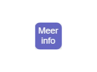

1. Willkommen




Willkommen in der Museumfabriek zur Audiotour „Schätze darbringen – Rituale in der Landschaft von Overijssel“.
Bereits um 4000 v. Chr. brachten die Menschen Opfer dar, oft an feuchten Orten wie Sümpfen, Mooren und Flüssen. Dieser Brauch hielt sich über Jahrtausende, selbst nachdem das Christentum um 768 n. Chr. Einzug gehalten hatte.
Früher lebten die Menschen im Einklang mit der Natur. Die Landschaft von Overijssel war mit ihren Sümpfen und geheimnisvollen Nebeln schwer bewohnbar. Solche Orte galten als etwas Besonderes. Man glaubte, hier lägen die Welt der Menschen und die der Götter oder Ahnen nah beieinander.
Wenn Menschen um etwas bitten oder Dankbarkeit ausdrücken wollten, wählten sie einen wertvollen Gegenstand: eine Axt, ein Schmuckstück, eine Waffe oder mitunter sogar einen Menschen. Diese Opfergaben brachten sie in Torfmooren und Sümpfen dar. In der feuchten, sauren Umgebung bleiben Materialien über Jahrtausende erhalten – selbst Holz, Leder, Felle und Haare. Auf dieser Tour entdecken Sie besondere Orte, an denen Archäologen solche Opfergaben gefunden haben.
Wie funktioniert die Tour?
Sie verwenden einen QR-Code. Klicken Sie auf den Pfeil oben rechts, um zum nächsten Punkt zu gelangen. Dessen Lage können Sie auf der Karte sehen. Die Tour dauert etwa 20 Minuten.
Falls weitere Informationen verfügbar sind, können Sie auf die Schaltfläche „Mehr Infos“ klicken:
Sie können Ihre Reihenfolge auch über die Karte selbst festlegen.
Für weitere Erläuterungen zu den Schaltflächen klicken Sie auf „Hilfe“:
Hören Sie mit Kopfhörern zu oder lesen Sie auf Ihrem Bildschirm mit. Viel Spaß!